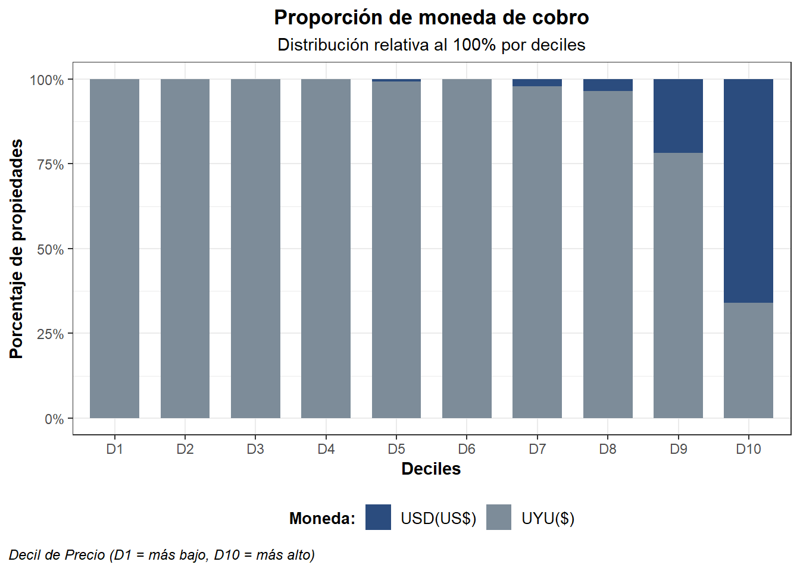
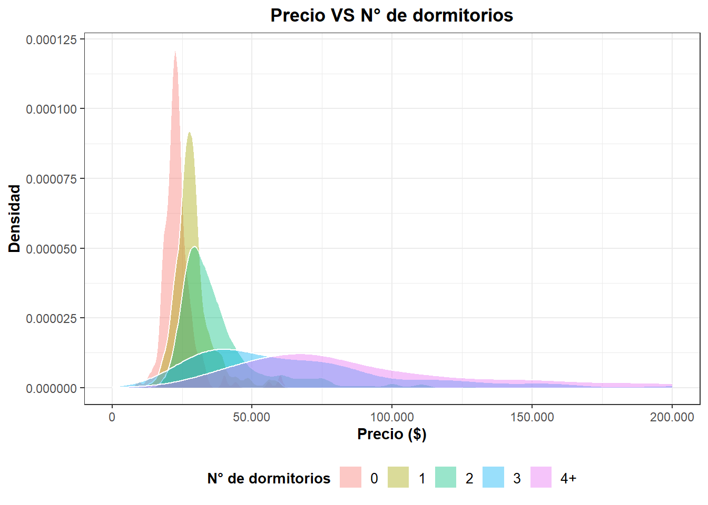
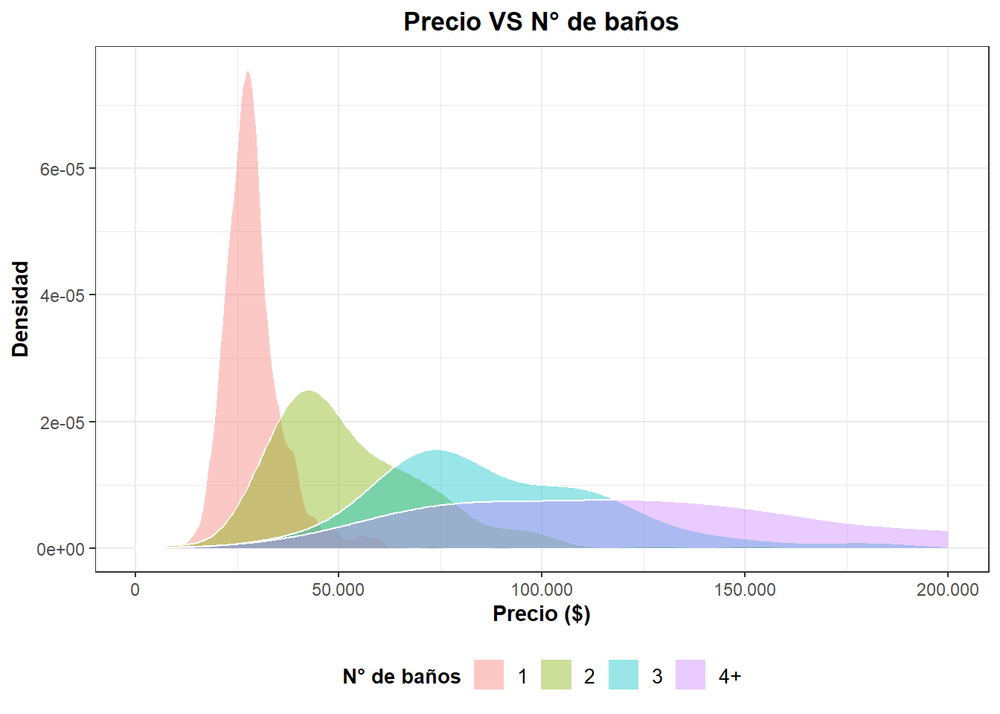
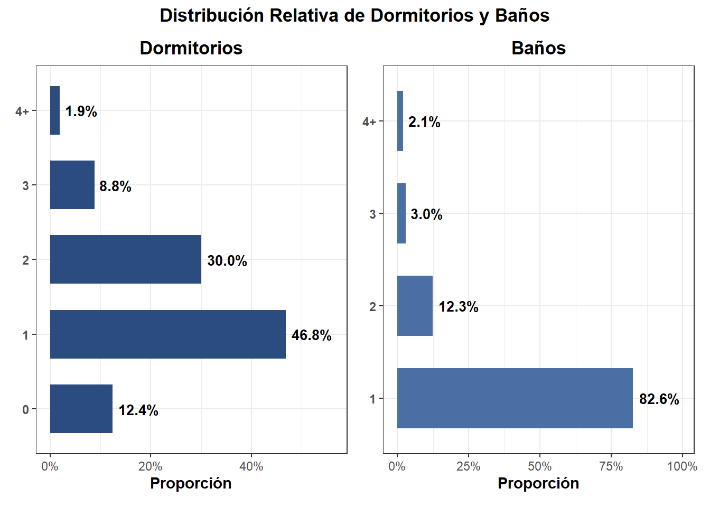
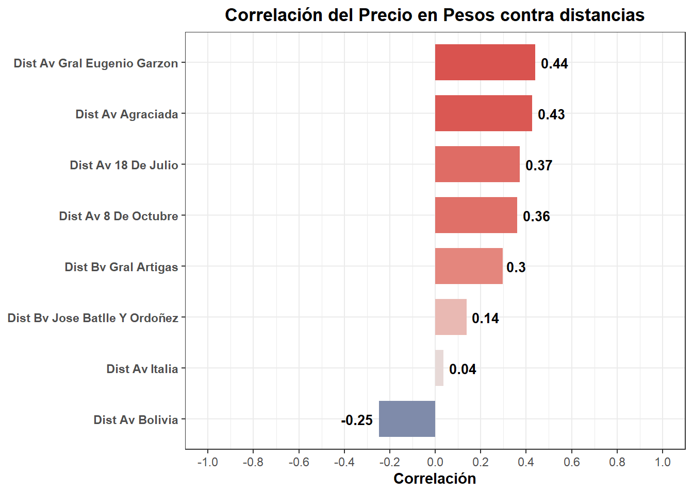
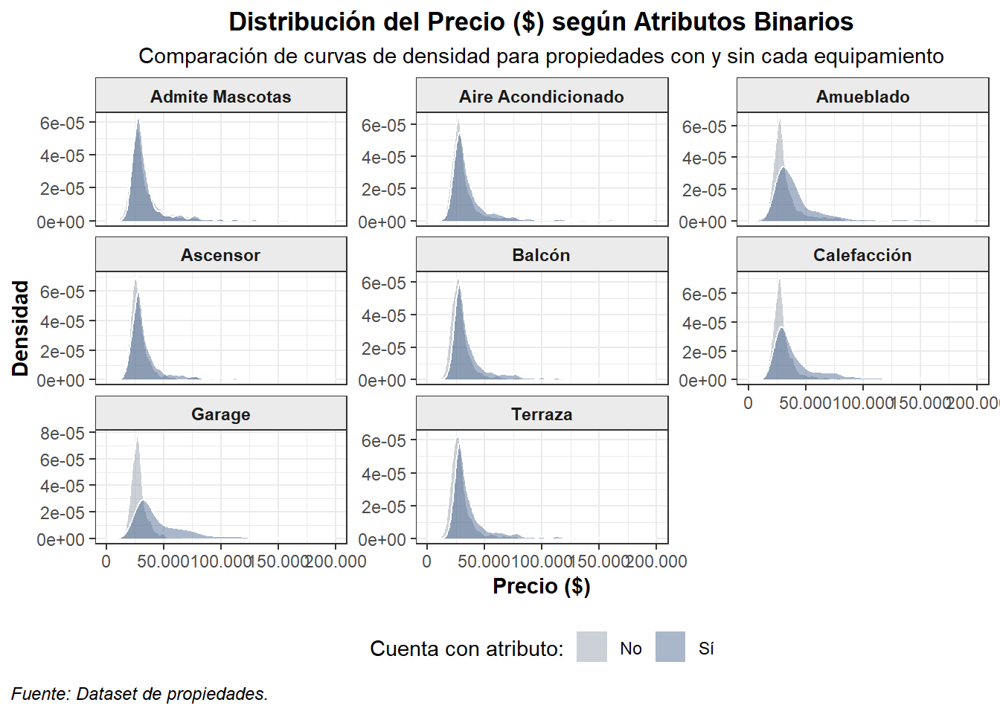

| Variable | Tipo de Dato | Descripción |
|---|---|---|
| Atributos Generales | ||
| precio | Numérica | Monto del alquiler |
| moneda | Carácter | Moneda de la publicación (UYU o USD) |
| direccion | Carácter | Dirección |
| barrio | Carácter | Barrio |
| metros_totales | Numérica | Superficie total construida en metros cuadrados |
| area_privada | Numérica | Superficie privada en metros cuadrados |
| dormitorios | Numérica | Cantidad de dormitorios |
| baños | Numérica | Cantidad de baños |
| garage | Carácter (Binaria) | ¿Tiene garaje? (Si / No) |
| gastos_comunes | Numérica | Gastos comunes en UYU($) |
| Comodidades | ||
| admite_mascotas | Carácter | ¿Permite mascotas? |
| disposicion | Carácter (Binaria) | ¿Es una propiedad ubicada al frente? (Si / No) |
| balcon | Carácter (Binaria) | ¿Tiene balcón? (Si / No) |
| terraza | Carácter (Binaria) | ¿Tiene terraza? (Si / No) |
| ascensor | Carácter (Binaria) | ¿Tiene ascensor? (Si / No) |
| amueblado | Carácter (Binaria) | ¿La propiedad está amueblada? (Si / No) |
| aire_acondicionado | Carácter (Binaria) | ¿Posee aire acondicionado? (Si / No) |
| calefaccion | Carácter (Binaria) | ¿Posee sistema de calefacción? (Si / No) |
| Georreferenciación y Enlaces | ||
| latitud_Y | Numérica | Coordenada de longitud (X) para georreferenciación |
| longitud_X | Numérica | Coordenada de latitud (Y) para georreferenciación |
| url | Carácter | Enlace web a la publicación original en Mercado Libre |
| Variables de distancia | ||
| dist_av_18_de_julio | Numérica | Distancia en metros a Av. 18 de Julio |
| dist_av_8_de_octubre | Numérica | Distancia en metros a Av. 8 de Octubre |
| dist_av_agraciada | Numérica | Distancia en metros a Av. Agraciada |
| dist_av_bolivia | Numérica | Distancia en metros a Av. Bolivia |
| dist_av_gral_eugenio_garzon | Numérica | Distancia en metros a Av. Gral. Eugenio Garzón |
| dist_av_italia | Numérica | Distancia en metros a Av. Italia |
| dist_bv_gral_artigas | Numérica | Distancia en metros a Bv. Gral. Artigas |
| dist_bv_jose_batlle_y_ordoñez | Numérica | Distancia en metros a Bv. José Batlle y Ordóñez |
Tarea III - Ciencia de datos con R
Hecho por: Lucas Giúdice. Docente: Juan Pablo Ferreira.
Análisis del mercado de alquiler de apartamentos en Montevideo
El propósito de este informe es el de generar un análisis exploratorio de datos que derive en primeras conclusiones sobre las determinantes del precio de alquiler de apartamentos en los distintos barrios de Montevideo. El análisis es complementado junto a un monitor de visualización georreferenciada de las observaciones incluidas; construido mediante las herramientas contenidas en el paquete Shiny (R), permitiendo así la segmentación de las observaciones de acuerdo a los criterios que el usuario desee. A su vez, se incorpora un predictor de precio medio alojado en la misma aplicación interactiva, el cual busca brindar una estimación del valor aproximado de alquiler para un apartamento con características especificadas por el usuario.
Metodología
El conjunto de datos proviene de los anuncios de alquiler disponibles en la plataforma Mercado Libre al 16 de julio de 2026, recolectados mediante técnicas automatizadas de web scraping. La muestra fue sometida a un proceso de depuración de datos con el fin de responder a los requerimientos tanto del análisis visual como del modelo predictivo.
Para enriquecer la capacidad explicativa del modelo, se incorporaron variables métricas de distancia hacia puntos de interés urbano considerados relevantes en la segmentación territorial de Montevideo. Posteriormente, se llevó a cabo el análisis exploratorio integrando herramientas estadísticas y de visualización. Finalmente, se implementó un algoritmo de Random Forest para la estimación de precios, seleccionado por su alto poder predictivo y su robustez ante la presencia de valores atípicos.
Datos
La base de datos original contenia un total de 2000 observaciones de apartamentos. Los criterios de depuración obedecieron criterios como información geográfica inconsistente con los datos reales, observaciones con valores no verosímiles con la realidad (apartamentos con ningún baño, gastos comúnes con valores muy bajos, números de dormitorio o baños incongruentes, entre otros motivos). Se imputaron valores faltantes en variables binarias referentes a cualidades del apartamento como lo es la posesión o no de aire acondicionado, o de calefacción. Las imputaciones son realizadas todas en favor de la negativa, considerando que son cualidades que el propietario notificaría de poseer. Unicamente el poseer servicio de ascensor fue imputado en dirección afirmativa. Para enriquecer el analisis se incluyen las distancias de la propiedad a ciertos puntos neurálgicos de la ciudad, útiles en su capacidad de segmentación de la misma. Las distancias se calculan a partir de datos de la Intendencia de Montevideo. También se adjudica el barrio en el cual reside la propiedad utilizando datos de la misma fuente. En primer lugar, se realizó un cruzamiento espacial (spatial join) cruzando las coordenadas de cada inmueble con la capa vectorial oficial de barrios de la Intendencia de Montevideo, corregida en su codificación y toponimia. Esto permitió reasignar con precisión geográfica el barrio real de cada apartamento y remover manualmente publicaciones con georreferenciación inconsistente respecto a su dirección. Los ajustes realizados a la base resultaron en el número final de 1386 observaciones de alquileres, con un total de 30 variables. Las mismas son definidas a continuación:
Análisis exploratorio
La distribución del precio tiene una asimetría hacia la derecha. La media de precio 2.8217082^{4}$ tiene valores mayores a la mediana de 2.8217082^{4}$ , lo que respalda la asímetría en los datos. Esto nos indica la presencia de valores atípicos que arrastran la media de los alquileres hacia valores más altos. Se observa como los valores de alquiler que superan a la media comienzan a cobrarse en mayor proporción en dolares.

Visualizamos el resultado anteriormente intuido: si bien la cantidad relativa de viviendas transaccionadas en dolares es menor (9.4%), su precencia comienza a ser más relevante cuanto mayor es el precio del alquiler del inmueble.

La relación entre el precio y el número de dormitorios es una claramente positiva. A mayor número de dormitorios el precio es mayor. Sin embargo se observa como la distribución de los precios de alquiler de apartamentos con menor número de dormitorios (monoambientes y apartamentos de hasta 2 habitaciones) es más concentrada que los datos correspondientes a apartamentos con 3 dormitorios en adelante, cuyos precios son más distribuidos, lo que puede indicar una mayor incidencia de otras variables en la formación de precios de dichos apartamentos.

Por el contrario, el efecto de la cantidad de baños parece ser más determinante en la formación de los precios de los alquileres. Del gráfico se obtiene un claro contraste entre la distribución de apartamentos con un único baño, con una concentración definida sobre los menores precios de alquiler, respecto de los apartamentos con mayor número de baños. Estos comienzan su distribución con valores mayores de alquileres y una dispersión más alta. Asimismo el porcentaje de alquileres con un baño es mayoritario con un 83% del total.

Observando la distribución de ambas variables en cantidades, se observa una cantidad relevante de apartamentos que poseen entre uno y dos dormitorios, constituyendo más de dos terceras partes del total. Sorprende la menor proporción de monoambientes que hay respecto de la presencia que suelen tener en el discurso público. Una mínima fracción de las viviendas son de más de dos dormitorios. La distribución de los baños, como ya se había adelantado es totalmente concentrada en torno a un único baño.

Se observa una relación positiva y esperable entre los metros cuadrados totales de la propiedad y el precio del alquiler. Esta dinámica se alinea con la mayor cantidad de dormitorios presente en los inmuebles de valor más alto, dado que un mayor número de ambientes requiere una superficie superior. Por otra parte, la relación entre el precio de alquiler y los gastos comunes muestra una intensidad similar con un de claro signo positivo, evidenciando que los apartamentos de mayor valor de mercado tienden a registrar también costos más elevados.


A continuación, se sintetizan los hallazgos relativos a las variables numéricas más relevantes, acompañados por la matriz de correlación entre estas y el precio de alquiler. En alineación con el análisis previo, se observa una correlación lineal marcadamente positiva entre las variables seleccionadas y el valor del arrendamiento.

Analogamente, se replica el análisis para las variables de distancia a las principales vías de la ciudad. Los resultados son concluyentes en algunos sentidos. Para empezar destaca la clara correlación negativa entre el precio de alquiler y la cercanía respecto de la Avenida Bolivia, vía ubicada en el este de la ciudad donde también se hayan los barrios asociados a sectores socioeconomicos más pudientes. En línea con esto, esta relación negativa indica que mientras más cerca te halles, mayor será el precio de alquiler. En el lado contrario tenemos el caso de las distancias respecto de Avenida Agraciada o Avenida Garzón, más próximas al noroeste de la ciudad, y para las cuales el coeficiente de correlación indica que su cercanía es sinónimo de precios menores. La cercanía a Avenidas como Bulevar Artigas y 8 de Octubre que se aproximan más a zonas Nortes y Noroestes también son indicativos de menores precios. Llama la atención Avenida Italia, ruta que marcadamente se orienta hacia el este. Sin embargo, existe la imagen popular de Avenida Italia como , considerandosela una separadora entre condiciones económicas superlativas frente a otras de menor brillo. Esta correlación baja indica a su neutralidad en términos de precio, reflejo de dicha posición divisioria de la realidad socioeconómica del departamento.

Al analizar las curvas de densidad de precio según la presencia o ausencia de atributos binarios, se observa un patrón generalizado: la tenencia de equipamiento básico no altera sustancialmente la forma de la distribución, generando únicamente un ligero desplazamiento marginal hacia la derecha; ergo precios levemente mayores.
Sin embargo, la presencia de garage, amueblado y calefacción constituye la principal excepción a este comportamiento. Para estas tres características, las distribuciones exhiben una mayor dispersión y una marcada asimetría hacia la derecha. Esto pone en evidencia que se trata de atributos diferenciales, asociados a segmentos del mercado de mayor categoría donde el abanico de precios de alquiler es significativamente más elevado y heterogéneo.

La siguiente visualización nos comunica la alta concentración de propiedades que hay en alquiler en la zona sureste y sur del departamento, enfocandosé en su mayoría en las áreas correspondientes a los municipios B y CH. y presente a un nivel menor en el E. El gráfico de barras a continuación respalda dschos resultados, con los 7 barrios que mpas propiedades tienen en alquiler pertenenciendo a dichos municiíos. Dichos barrios acumulan un total de 62.9% respecto del total de propiedades en alquiler.


Modelo predictivo
Para la construcción del modelo de estimación del precio mensual de los alquileres se entrenó un modelo de random forest, dada la alta precisión que tiene como modelo, así como la robustez frente a datos atípicos que pudiesen alterar los resultados. Se seleccionaron variables físicas de los inmuebles (dormitorios, baños, balcón, garage, metros_totales y gastos_comunes) y un conjunto de variables geoespaciales relativas a la distancia hacia puntos de interés. Estas últimas se construyeron específicamente teniendo en cuenta la necesidad de entrenar un algoritmo que como resultado arroje una variable cuantitativa contínua, cuando sus insumos originales eran en un principio mayormente discretos (específicamente binarios). Ded igual manera, se utilizaron para sustituir la utilización de la variable barrio de manera directa. La necesidad de hacer esta sustitución nace de el hecho de que la variable barrio es una variable categórica de 61 niveles, y dado que contabamos con poco menos de 1500 variables, el uso de tanto niveles se entendió que iba a entorpecer el algoritmo, ya que poor barrio se poseen pocos datos (y en algunos ninguno). De esta manera, se calcularon los centroides de cada barrio, y desde dicho centroide se midieron las distancias correspondientes a las vías de referencia, lo que nos permitió tener una observación por barrio que a la hora de ingresarse en el predictor de la API un barrio en particular, se predice entre otras cosas utilizando las distancias de dicho centroide en cuestión.
Los precios predichos se realizaron en la moneda local, esto es pesos uruguayos. Aquellos originalmente fijados en dólares estadounidenses se convirtieron utilizando un tipo de cambio de referencia de $40. El conjunto de datos completo se dividió aleatoriamente en un 80% para la fase de entrenamiento y un 20% para la evaluación.
Se ajustó un algoritmo configurado con 500 árboles, un mínimo de 20 observaciones por nodo hoja, la evaluación de 6 variables por división de bootstrap. Estos parámetros se fueron ajustando tras varias iteraciones del algoritmo.
En la etapa de entrenamiento, el modelo demostró una alta capacidad para capturar los patrones del mercado inmobiliario local. Al evaluar las predicciones sobre este conjunto de datos, se obtuvo un coeficiente de determinación (\(R^2\)) de 0.916, lo que indica que el algoritmo logró explicar el 91.6% de la variabilidad total de los precios de alquiler. En cuanto a las métricas de error, el Error Absoluto Medio (MAE) fue de $3.364 UYU, representando el desvío promedio en valor absoluto entre el precio real y el predicho para las propiedades de entrenamiento. Por su parte, el Error Cuadrático Medio (RMSE) alcanzó los $7.950 UYU; indicando la presencia de algunas propiedades con precios atípicamente alejados de la media en la muestra de entrenamiento.
| Métrica | Valor |
|---|---|
| RMSE (Error Cuadrático Medio) | 7.950,27 |
| R² (Coeficiente de Determinación) | 0,92 |
| MAE (Error Absoluto Medio) | 3.364,21 |
Al contrastar con los valores observados en la muestra de prueba, no vistos durante el ajuste, el modelo mantuvo un desempeño altamente satisfactorio. Se alcanzó un \(R^2\) de 0.833, confirmando que la estructura aprendida explica el 83.3% de la varianza en propiedades independientes. En esta fase, el MAE se situó en $4.914 UYU, lo que significa que en el escenario real las predicciones del modelo se equivocan, en promedio, por aproximadamente $4.914 pesos uruguayos por alquiler. Asimismo, el RMSE en prueba fue de $7.773 UYU, un nivel controlado y muy alineado con el de entrenamiento que confirma que la magnitud de los errores grandes no se dispara al predecir datos nuevos. La moderada brecha entre ambos conjuntos descarta la presencia de un sobreajuste severo y valida la robustez del algoritmo seleccionado.
| Métrica | Valor |
|---|---|
| RMSE (Error Cuadrático Medio) | 7.773,35 |
| R² (Coeficiente de Determinación) | 0,83 |
| MAE (Error Absoluto Medio) | 4.913,51 |
El análisis de la importancia de las variables utilizadas por el Random Forest para predecir los valores observados, desvela como responsables absolutos de los resultados a la superficie cubierta total del apartamento y los gastos_comunes. Detrás de ambos protagonistas se ubica la cantidad de baños, desplazando a un segundo plano, por ejemplo, a la cantidad de dormitorios. El resto de las variables utilizadas realizan aportes al modelo predictivo empleado.

Conclusión
El trabajo realizado permitió generar un análisis completo y complementario que combinó un análisis exploratorio profundo, con una plataforma interactiva de visualización espacial así como predicción.
Dentro de los hallazgos más destacados, resalta la superior capacidad explicativa de la cantidad de baños por sobre el número de dormitorios al determinar el precio del alquiler desafiando la intuición natural sobre los determinantes del valor inmobiliario. Se teoriza que la raíz del fenómeno se explicaría por la presencia de un segmento de propiedades de alta gama dentro de la muestra, donde la cantidad de baños actúa como un claro elemento diferenciador frente a los apartamentos de segmento medio. De cara a futuras investigaciones, resulta de especial interés analizar si el impacto de la cantidad de dormitorios cobra mayor relevancia al evaluar subconjuntos de datos filtrados de valores atípicos.
Por otro lado, la elevada importancia de la superficie total (metros_totales) y de los gastos_comunes concuerda con la dinámica esperada del mercado locativo. Finalmente, el abordaje metodológico implementado para capturar la dimensión espacial a través de distancias geográficas desde centroides representó un aporte clave, permitiendo enriquecer la complejidad del modelo más alla de las propias caracteristicas de los apartamentos.